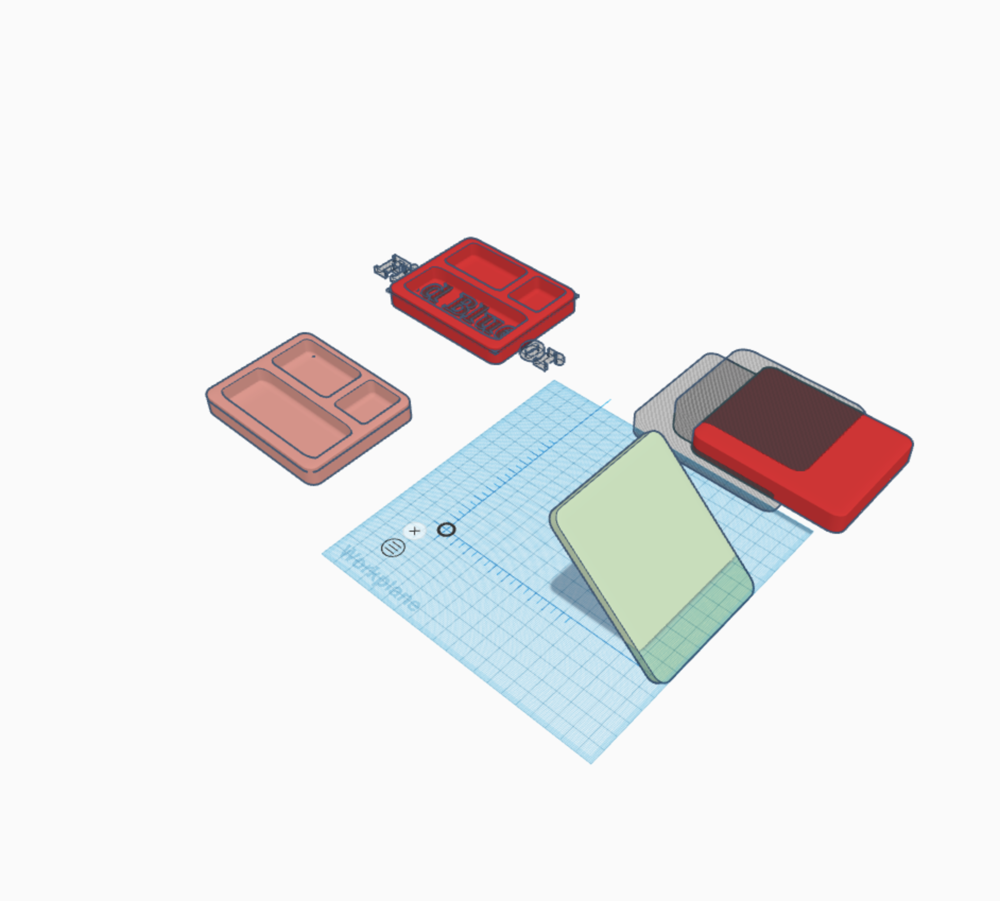

To build the perfect tool for others to use, we need to equip ourselves with the proper creative energy. And, in the context of design, Google Docs doesn't unlock creativity. Initially, our team did our work in Google Docs but when a team member brought up the idea of switching to Miro, while I was skeptical, I was open to trying something new. I noticed that we were far more creative when using a platform other than Google Docs. Probably, the most insightful reflection I've had from this class comes in the form of a metaphor: One can't be a pilot by learning how to drive a car.
CAD is powerful. By simply just designing for free on TinkerCad, we could (if we wanted though it would not be a good idea without gaining additional feedback) mass-produce these bento-boxes for cheap prices.
I learned that CAD is extremely powerful. One could envision a product and with the help of a computer, build a simulation of it online to showcase. If you know what you're doing then, the software would give you a simulation of a product that can easily be modifiable. I would love to take a class and learn Fusion 360 one day!
